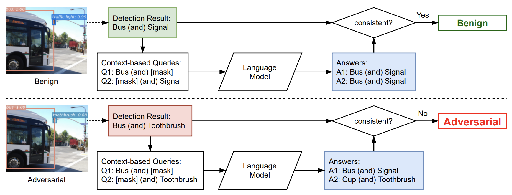

|

|
Exploiting Multi-Object Relationships for Detecting Adversarial Attacks in Complex Scenes
Mingjun Yin, Shasha Li, Zikui Cai, Chengyu Song, M. Salman Asif, Amit K. Roy-Chowdhury, Srikanth V. Krishnamurthy
International Conference on Computer Vision (ICCV), 2021
arXiv
We developed a novel approach (SCENE-Lang) to perform model-agnostic context consistency checks using language models.
|
 hide forever |
hide once
hide forever |
hide once